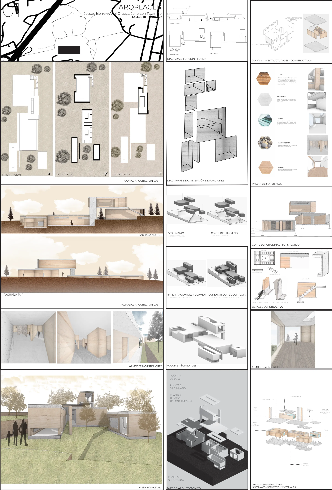
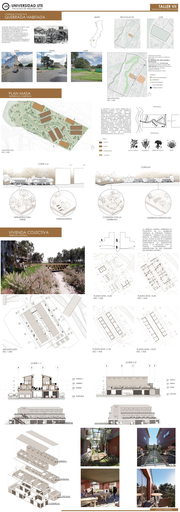

Índice
Cuatro semestres de taller, cada uno con su color, como las aristas de un mismo escalímetro. Cada lámina lleva su código y su escala.
Semestre III: Arqplacer
Tercer semestre Proyecto grupal con Ariel Ortega y Jefferson Pazmiño
- Taller
- III — Remirar
- Tipología
- Equipamiento de bienestar
- Programa
- Lectura · Yoga · Zona húmeda · Gimnasio · Baile
- Escalas
- Dibujos sin escala gráfica (S/E)

Un lugar para el cuerpo y la pausa, asentado en el terreno y construido con tierra.
Arqplacer organiza un recorrido de bienestar en cuatro niveles: lectura; yoga y zona húmeda; gimnasio; y baile. Los volúmenes se asientan en el terreno y se conectan con su contexto a través de recorridos y zonas verdes.
Los muros autoportantes de tapial, junto con muros de contención y losas de hormigón, construyen atmósferas interiores cálidas, con luz cenital y una relación directa con el paisaje. La paleta se completa con vidrio, canto rodado y madera.
Láminas




Semestre V: UMI — Espacio entre
Quinto semestre Jerónimo Carrión y Juan León Mera, Quito
- Taller
- V — La Buena Vida
- Tipología
- Vivienda · módulo habitable de 5,40 × 3,98 m
- Programa
- Vivienda · Huertos domésticos · Zonas comunales
- Escalas
- 1:75 · 1:125 · 1:175

Una arquitectura que no se llena, sino que se deja respirar.
UMI es un espacio de transición entre lo individual y lo colectivo: un lugar donde desconectarse del exterior y volver a conectarse mediante la meditación.
El edificio se organiza alrededor de núcleos de circulación y servicio, huertos domésticos y zonas comunales. En cada vivienda el mobiliario se transforma: la cama se eleva, la mesa aparece y el suelo queda libre para habitar.


Semestre VI: Plaza Cultural
Sexto semestre Espacio público · Arte, danza y encuentro
- Taller
- VI
- Tipología
- Plaza y equipamiento cultural
- Programa
- Galería · Taller de arte · Gradas-escenario
- Escalas
- 1:175

Un espacio público de encuentro, arte y expresión que se acomoda a la ladera.
La plaza se organiza en plataformas que siguen la pendiente. En la parte baja, semienterrada, una galería de doble altura alberga esculturas y obra gráfica.
Arriba, una gran cubierta sostenida por diagonales protege un taller de pintura al aire libre y unas gradas que suben con el terreno y funcionan como escenario para la danza y la reunión.


Semestre VII: Quebrada Habitada
Séptimo semestre Ruccullacta e Intillacta, Quitumbe — Quito · Lote de 13.147,76 m²
- Taller
- VII — Dinámicas Espaciales
- Tipología
- Vivienda colectiva de uso mixto
- Programa
- Vivienda · Comercio · Oficinas · Terraza central
- Escalas
- 1:300 · 1:425 · 1:500

La quebrada como eje: un jardín inundable que organiza el conjunto y lo devuelve al paisaje.
Quitumbe, al sur de Quito, pasó de ser una zona agrícola y de haciendas a consolidarse como un nodo urbano, impulsado por la expansión de la ciudad, la vivienda y la llegada de infraestructura y transporte.
El proyecto reinterpreta la dinámica de una quebrada: un eje que se incrusta en el terreno con alturas, terrazas y recorridos, y que almacena temporalmente el agua de lluvia. La vegetación nativa (sacha capulí, romerillo, cresta de gallo y tikna) une arquitectura y paisaje.
La terraza central reúne vivienda, comercio y trabajo en un solo edificio y conecta los usos a lo largo de su recorrido.
Láminas





Perfil
Del módulo de vivienda mínima al conjunto habitacional y la plaza pública: cuatro semestres de taller en la Universidad UTE.
Josue Nicolás Herrera Campaña estudia Arquitectura en la Universidad UTE, en Quito. Sus proyectos de taller trabajan con tierra apisonada (tapial) y ladrillo, con vegetación nativa y con el agua de lluvia como parte del paisaje.
- Formación
- Arquitectura · Universidad UTE, Facultad de Arquitectura
- Recorrido
- III Remirar · V La Buena Vida · VI Espacio público · VII Dinámicas Espaciales
- Materiales y estrategias
- Tapial · Ladrillo · Vegetación nativa · Jardín inundable